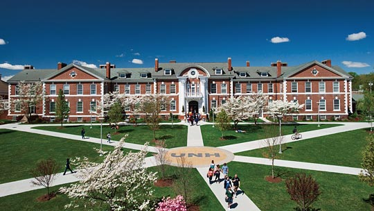

Hello,
I began to take intrest in the University of New Haven when I was applying for colleges in high school. This was not my frist choice to begin with, but it was one of three schools that I came to visit. After I came to accepted students day I realized that this school was where I needed to be for the field that I wanted to go into, which is Criminal Justica and Legal Studies. I came here in 2017 and am greaduating in 2021.
